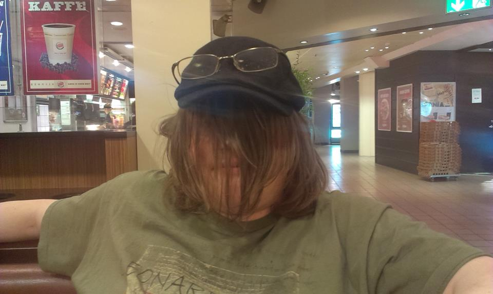
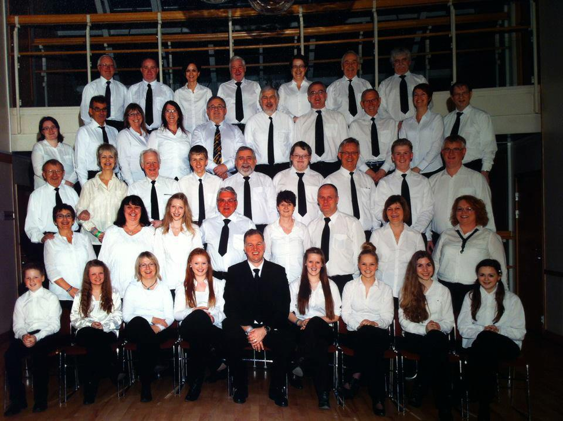
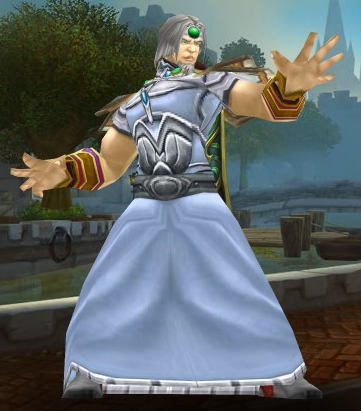
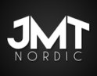

Pål V. Gjerde

Det er jeg som er Pål. Fire dager i uken sitter jeg på Høyskolen i Bergen for å lære programmering. To dager i uken er jeg på jobb i Åsane som profesjonell webutvikler. Den siste dagen har jeg fri.

Dette er korpset mitt, Arne Musikforening. Bildet ble tatt på NM i janitsjar 2012. Mitt instrument er en tuba, som jeg spiller sammen med fire andre tubaister. Og resten av korpset. Vi har tenkt oss til NM i år også, og skal prøve å kvalifisere oss til 4. divisjon.
Dette er korpset mitt, Arne Musikforening. Bildet ble tatt på NM i janitsjar 2012. Mitt instrument er en tuba, som jeg spiller sammen med fire andre tubaister. Og resten av korpset. Vi har tenkt oss til NM i år også, og skal prøve å kvalifisere oss til 4. divisjon.

Dette er hovedkarakteren min i World of Warcraft. Jeg spiller en magiker som bruker iskreftene sine til å overvinne fiendene sine. Og andres fiender. Stort sett andres, egentlig.
Dette er hovedkarakteren min i World of Warcraft. Jeg spiller en magiker som bruker iskreftene sine til å overvinne fiendene sine. Og andres fiender. Stort sett andres, egentlig.

Dette er Pikachu. Pikachu er en svak pokémon, og selv om den har en ting som kan doble angrepsstyrken dens, er den likevel ikke verdt å bruke. Men ungene elsker den. Jeg leder en pokémonliga i Bergen på onsdager, og en på Askøy på tirsdager. Stort sett betyr det at jeg rydder opp etter de andre.

Dette er logoen til arbeidsplassen min. JMT Nordic er en webbedrift i Åsane med flere prosjekter. Et av prosjektene jeg har hatt mye med er humorsiden likeaboss.com, som vi brukte til å sponse Andreas Bakkerud.
Dette er logoen til arbeidsplassen min. JMT Nordic er en webbedrift i Åsane med flere prosjekter. Et av prosjektene jeg har hatt mye med er humorsiden likeaboss.com, som vi brukte til å sponse Andreas Bakkerud.